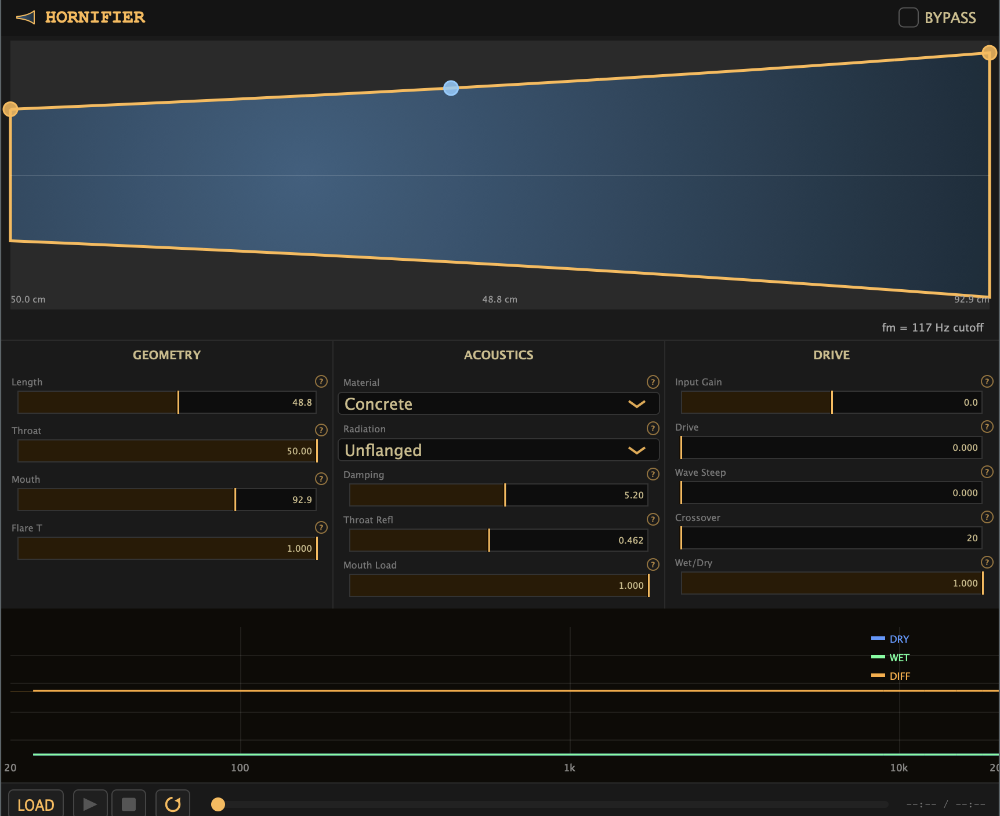
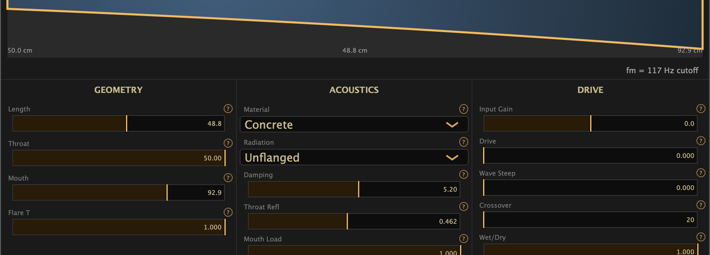

Horn-physics character coloration
Infuse tracks with authentic bell geometry — gramophones, megaphones, broadcast warmth — driven by a real Kelly-Lochbaum waveguide. VST3 · AU · Standalone.

Toggle between the raw signal and HORNIFIER's processed output — same track, same moment.

Live cross-section canvas. Drag geometry sliders and watch the bell redraw in real time.
Up to 40 conical scattering sections. Authentic resonance, impedance, and reflection — not convolution.
Hammerstein-Wiener throat nonlinearity plus distributed brassy bloom, controlled independently.
Real-time FFT spectrum showing dry, processed, and difference signals simultaneously.
Klipschorn, WE-15A, Victrola, Megaphone, Trumpet Bell, French Horn, Giant Conch & more.
Linkwitz-Riley HP into the horn, delayed dry band for alignment, full wet/dry blend control.
Most "horn" effects are IRs: they capture one bell, at one moment, at one SPL. HORNIFIER models the mechanism. A real Kelly-Lochbaum scattering chain propagates your audio through a series of conical tube segments. Geometry changes the scattering coefficients. Drive changes the nonlinear boundary at the throat. Wave steepening adds distributed distortion down the bore. The result changes with every parameter — because the physics change with every parameter.
The Levine-Schwinger mouth radiation filter shapes the open-end reflection to match your chosen bell geometry: unflanged, flanged, or spherical cap. Crossover frequency sets which part of your signal enters the waveguide. Everything else passes through time-aligned.
Secure checkout via Lemon Squeezy
30-day full refund, no questions asked.
Your licence covers VST3, AU, and Standalone — all three in one download, no extra charge. VST3 works in Ableton Live, Reaper, Bitwig, Cubase, Nuendo, and any other VST3 host. AU works in Logic Pro, GarageBand, and AU-compatible hosts. Standalone lets you run HORNIFIER without a DAW at all.
The trial is a fully functional time-limited build — all presets, all parameters, no feature restrictions. Audio is intermittently muted after 20 minutes of continuous use. When you're ready to buy, your settings carry over to the activated version seamlessly.
Full refund within 30 days of purchase, no questions asked. Email support and we'll process it the same business day. We process refunds via Lemon Squeezy — the same platform used at checkout.
Yes — all v1.x updates are free for ever. New presets, DSP refinements, and DAW compatibility fixes land automatically. If a major v2 release ever requires an upgrade fee, existing customers get a significant discount and plenty of notice.
Any DAW that loads VST3 or AU plugins on macOS. Confirmed: Logic Pro, Ableton Live 11+, Reaper, Bitwig Studio, Cubase, Nuendo, Pro Tools (AudioSuite via AU bridge), GarageBand. If your host loads AU or VST3, HORNIFIER loads.